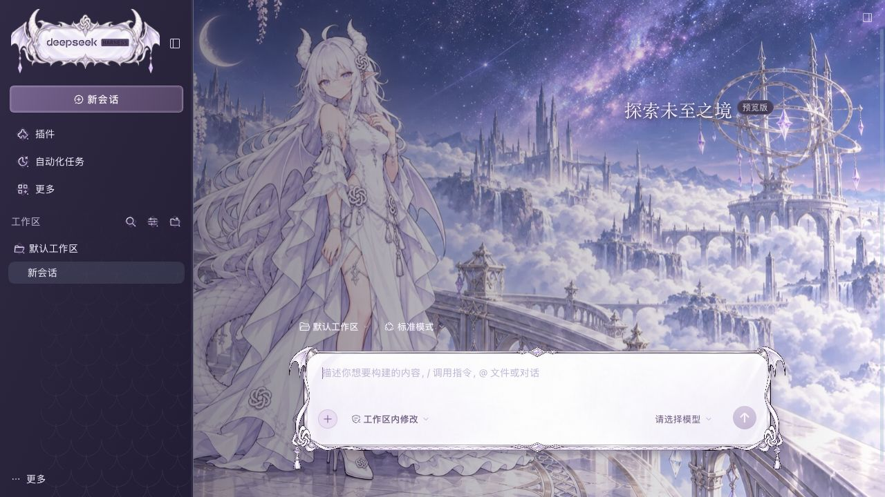
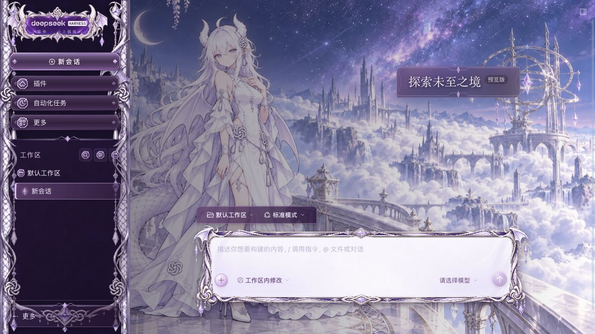

<!doctype html><html lang="zh-CN"><meta charset="utf-8"><meta name="viewport" content="width=device-width,initial-scale=1"><title>云上银庭 · 0.1 / 0.2 对照</title><style>*{box-sizing:border-box}body{margin:0;background:#1d1329;color:#f6eaff;font:14px/1.7 -apple-system,"PingFang SC",sans-serif}header{padding:22px 28px;display:flex;align-items:center;gap:18px;flex-wrap:wrap}h1{margin:0;font-size:21px;font-weight:500}p{color:#c9afd9;margin:0}a{color:#e7c6fb;margin-left:auto}.views{display:grid;grid-template-columns:1fr 1fr;gap:20px;padding:0 28px 28px}.view{margin:0;border:1px solid #a77abb77;border-radius:12px;overflow:hidden;background:#2d1c3c}figcaption{padding:12px 16px;display:flex;justify-content:space-between;align-items:center;color:#ead4fb}img{display:block;width:100%;height:auto;cursor:zoom-in}dialog{padding:0;background:#1a1024;border:1px solid #b08fc9;border-radius:10px;max-width:96vw;max-height:96vh}dialog::backdrop{background:#0b0519cc}dialog img{max-height:90vh;width:auto;max-width:94vw}button{background:#735087;color:#fff1ff;border:1px solid #d0aee2;border-radius:6px;padding:5px 12px;cursor:pointer}footer{padding:0 28px 25px;color:#c0a5d1;font-size:12px}@media(max-width:900px){.views{grid-template-columns:1fr}header{padding:18px}.views{padding:0 18px 18px}}</style><header><div><h1>云上银庭 · 界面深化</h1><p>保留云海全身构图，深化银鳞、编结与紫晶的材质和控件层次。</p></div><a href="index.html">打开完整预览 →</a></header><main class="views"><figure class="view"><figcaption>0.1 <span>前版</span></figcaption></figure><figure class="view"><figcaption>0.2 <span>银龙宫廷</span></figcaption></figure></main><footer>点击图片可放大。以上为独立DSH实际界面截图；人物与环境自然联动版动图待Grok回片，现有背景仅作微动占位。</footer><dialog><form method="dialog"><button>关闭</button></form></dialog><script>const d=document.querySelector('dialog');document.querySelectorAll('.views img').forEach(i=>i.onclick=()=>{d.querySelector('img').src=i.src;d.showModal()});</script></html>